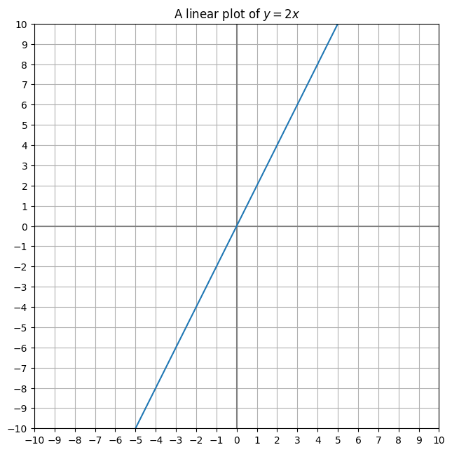

# So far based on
# /matplotlib-coordinates-toward-a-python-graphing-calculator/
import matplotlib.pyplot as plt
def configure_graph_grid(grid_min, grid_max):
"""Set up a square grid axis"""
# Make it square and set limits
plt.axis('square')
plt.axis(( grid_min, grid_max, grid_min, grid_max))
def set_ticks(axes, min_val, max_val, tick_increment=1):
#print(type(axes))
"""Sets the granularity of the boxes. Default is 1"""
ticks = [x for x in range(min_val, max_val +1, tick_increment)]
axes.set_xticks(ticks)
axes.set_yticks(ticks)
def plot_axes(grid_min, grid_max):
"""Plot x and y axes, x first then y"""
plt.plot([grid_min, grid_max], [0,0] , color="gray")
plt.plot([0,0],[grid_min, grid_max], color="gray")
#plt.arrow(grid_min, 0, grid_max, 0)
plt.grid()
def linear(x, m=2, b = -1):
"""A function to plot an arbitrary point (x) on a line."""
return m * x + b
x_values = [-8, 8]
y_values = [linear(x, m=2, b=0) for x in x_values]
min_val, max_val = -10, 10
fig, axes = plt.subplots(figsize=(7.5,7.5))
configure_graph_grid(min_val, max_val)
plot_axes(min_val, max_val)
set_ticks(axes, min_val, max_val, 1)
plt.plot(x_values, y_values,)
_ = plt.title("A linear plot of $y = 2x$")
